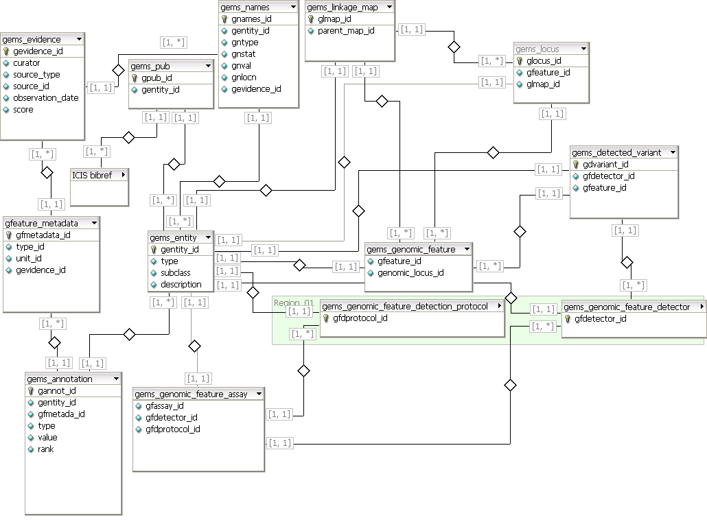

TDM Gene Management System 6.0
From ICISWiki
Back to Main Page > ICIS 6.0 Home Page > ICIS 6.0 Models & Schemata
MANAGEMENT OF GENETIC DATA
Acknowledgment
Several sections of this page simply cross reference their counterparts on the ICIS 5.4 GEMS narratives. The ICIS 6.0 GEMS schema, however, is modified and follows more closely the nomenclature and architecture of the Generation Challenge Programme Demeter domain model for genotyping data.
Introduction
See ICIS 5.4 GEMS Narrative Introduction.
Molecular Data
See ICIS 5.4 GEMS Narrative Molecular Data.
Molecular Variants
See ICIS 5.4 GEMS Narrative Molecular Variants.
Derived Data
See ICIS 5.4 GEMS Narrative Derived Data.
The Gene Management System Table Structure
Generation Challenge Programme Domain Models
The ICIS 6.0 schema is largely inspired by the structure and class nomenclature of the Generation Challenge Programme Genotype and Genomic Mapping domain models. These models (as Unified Modeling Language diagrams, July 2007 Release 1.8) are replicated here below.
Figure 1. GCP Genotype Model
Figure 2. GCP Genomic Mapping Model
GEMS uses the following table structure to store details on genotype domain model objects (table names and attributes follow the Generation Challenge Programme convention).
Figure 3. ICIS GEMS 6.0 Schema 
Notation used:
Table Relationships
The central table of GEMS 6.0 schema is the Entity table (gems_entity) which is the superclass which records all generic information about any data object in the GEMS. The subclass field of this table is an enumeration of each major class of actual GEMS entity: LinkageMap, GenomicFeature, etc.
Table Definitions
GEMS_ENTITY
The GEMS_ENTITY table contains one entry for every major entity object managed by GEMS and keeps track of all generic information about that Entity. In this way the GEMS_ENTITY table is a direct implementation of the GCP Entity class. The subclass field of the table partitions contents of the table (via enum values) into the various non-overlapping classes of GEMS objects, largely described within the GCP Domain Model for Genotyping, including the following:
- GenomicFeature: a specific segment (subsequence) of DNA in the genome (specified Germplasm) or generally within a class of organism(i.e. species, e.g. Oryza sativa) of interest. A GenomicFeature may (or may not) have a known location ("locus") on specified maps, a known content ("genotype") in specified Germplasm and/or a specified biological/technical biological (e.g. "gene") or technical (e.g. "SSR marker") function of interest.
- LinkageMap: a genetic or physical map of genomic loci
- Locus: experimentally observed assignment ("MapFeature") of a specified GenomicFeature to a specific LinkageMap
- GenomicFeatureDetector: a specific biological reagent and/or information (e.g. PCR primers) that detect a specific subset of possible GenomicFeatures in a genome.
- GenomicFeatureDetectionProtocol: non-biologically specific protocol for using a GenomicFeatureDetector in an experimental assay.
- GenomicFeatureAssay: the potentially many-to-many join of GenomicFeatureDetector with available GenomicFeatureDetectionProtocols
- DetectedVariant: one specified instance of GenomicFeature content ("allele") detected by a GenomicFeatureDetector. If the variant can be analytically interpreted to belong to a specified GenomicFeature, then it is considered in GCP domain model terms to be a GenomicFeatureVariant
The important rule to note is that although the GEMS_ENTITY table autoincrements its primary keys, any and all subclassed objects (and corresponding table entries) share the identical primary key to the GEMS_ENTITY to which they correspond (e.g. a given entry in the GEMS_LINKAGE_MAP table will have the same primary key value as its corresponding entry in the GEMS_ENTITY table).
The type field of the GEMS_ENTITY serves to designate more specific subtypes of entity within each subclass, for example, a LinkageMap could be a "GeneticMap" (versus a "PhysicalMap"). This will generally refer to an ontology. the description field can be any text that meaningfully describes the object.
The GEMS_ENTITY table has relations with several other tables that provide for the identification, citations and annotation (see the GCP domain model for Entity) that describe the given GEMS_ENTITY entry.
Table 1. GEMS_ENTITY table
| Fieldname | Description | Type |
|---|---|---|
| gentity_id | long, primary key, autoincrement | Unique ID for the Entity |
| subclass | enum (subclasses of entity as noted above) | Major subclass of GEMS Entity (e.g. LinkageMap, GenomicFeature, etc.) |
| type | cvterm_id foreign key to Chado cv module cvterm table | Minor subclass of object (e.g. DArt marker type) |
| description | varchar(255) | Description of the specific GEMS Entity |
GEMS_NAMES
GEMS_NAMES table serves as a catalogue of marker detector names and molecular variant names. GOBJTYPE contains the table name where all other information regarding the name specified in the GNVAL field can be found. GNID is the unique identifier of a specific name. GOBJID contains the ID of the name in the table name specified in the GOBJTYPE.
Ex.
GNNAMES_ID = 2715 GENTITY_ID = 1200 GNVAL = RM105_143 ... this entry indicates that "RM105_143" is a name with identified by unique id = 2715 in the GEMS_NAMES table, that is a name of the entity identified by the foreign key unique id = 1200 pointing to the GEMS_Entity table.
Table 2. GEMS_NAMES table
| Fieldname | Description | Type |
|---|---|---|
| gnames_id | Long | Unique ID of the Name |
| gentity_id | Long | Unique ID of GEMS_ENTITY to which the name belongs |
| gntype | Long | Type of Name |
| gnstat | Long | Status of Name (0- default value 1 - synonyms) |
| gnval | Varchar(255) | Name Value |
| gnlocn | Long | Location where Name was assigned |
| gevidence_id | Long | Unique ID of GEMS_EVIDENCE documenting the support of this name assignment |
GEMS_PUB
The GEMS_PUB table is the join table between GEMS_ENTITY and the ICIS BIBLIOREFS table.
Table 3. GEMS_PUB table
| Fieldname | Description | Type |
|---|---|---|
| gentity_id | Long foreign key to the GEMS_ENTITY table | Unique ID for the GEMS_ENTITY described within the given publication |
| pub_id | Long foreign key to the ICIS BIBLIOREFS table | Unique ID of the publication |
GEMS_ANNOTATION
The GEMS_ANNOTATION table contains the values of GEMS_ENTITY feature annotation (i.e. GCP Feature data attached to the Entity).
Table 4. GEMS_ANNOTATION table
| Fieldname | Description | Type |
|---|---|---|
| gannot_id | Long, primary key | Unique ID for the annotation |
| gentity_id | Long foreign key to the GEMS_ENTITY primary key | Unique ID for the annotated GEMS_ENTITY |
| gfmetadata | Long foreign key to the GEMS_FEATURE_METADATA primary key | Unique Property ID of the annotation type |
| data_type | Long (foreign key to the Chado cvterm table, or just a constant(??)) | Is a controlled vocabulary designating the data type of the feature value |
| value | Varchar(255) | Value, encoded as a string |
| value_id | Long foreign key to a pertinent value table | May points to a pertinent entry in another pertinent table, based on the value data_type, if the value cannot be adequately represented in a simple string. |
| rank | Long | Sequence number for a Feature value series (where the given annotation Feature value is a "vector" of values; rank 0 applies for a single valued feature) |
GEMS_FEATURE_METADATA
GEMS_FEATURE_METADATA table defines the Feature type (a.k.a. ICIS "property"), unit (a.k.a. ICIS scale) and supportingEvidence (a.k.a. ICIS method) associated with a given type of GEMS_ENTITY annotation (i.e. GEMS_ANNOTATION entry gmetadata_id foreign key).
Table 5. GEMS_FEATURE_METADATA table
| Fieldname | Description | Type |
|---|---|---|
| gmetadata_id | Long primary key | Unique ID for the combination of annotation Feature type, unit and supportingEvidence |
| type_id | Long foreign key into Chado cvterm table | Unique ID for the "type" of annotated Feature |
| unit_id | Long foreign key into Chado cvterm table | Unique ID for the "unit" of the value of the annotated Feature |
| supporting_evidence_id | Long foreign key into GEMS_EVIDENCE table | Unique ID for the GEMS_EVIDENCE associated with the Feature |
GEMS_EVIDENCE
The GEMS_EVIDENCE table documents the Evidence supporting a given GEMS_ANNOTATION assertion, including the source of the evidence (e.g. publication, study, analysis program, etc.), observation_date, score and the identity of the curator who recorded the evidence.
Table 6. GEMS_EVIDENCE table
| Fieldname | Description | Type |
|---|---|---|
| gevidence_id | Long, primary key | Unique ID for the Evidence entry |
| curator | Long foreign key into the ICIS user table | Curator of the specific evidence |
| source_type | Long | Specifies the data type of the source_id (i.e. table identification for the source_id foreign key, e.g. BIBLIOREFS, STUDY, etc) |
| source_id | Unique Property ID of the pertinent entry in the Evidence source table | |
| observation_date | date | Date when the Feature Evidence was asserted |
| score | varchar(64) | Some source specific measurement of statistical confidence of the source assertion of the annotation Feature value |
GEMS_GENOMIC_FEATURE
GEMS_GENOMIC_FEATURE table documents the LinkageMap location, content and function of a specified DNA segment in a genome. Given that all of the documentation of this object may be represented in the GEMS_ENTITY table and its table relationships, the GEMS_GENOMIC_FEATURE may be represented solely as a subclass indexed set of entries in the GEMS_ENTITY table, hence this table is redundant (i.e. doesn't need to be implemented directly).
Table 7. GEMS_GENOMIC_FEATURE table
| Fieldname | Description | Type |
|---|---|---|
| gfeature_id | Long | Unique ID for the GenomicFeature |
GEMS_LINKAGE_MAP
GEMS_LINKAGE_MAP table contains information on genetic, physical, or other kinds of LinkageMap objects (see GCP genomic map domain model description).
Table 8. GEMS_LINKAGE_MAP table
| Fieldname | Description | Type |
|---|---|---|
| gmap_id | Long | Unique ID for the LinkageMap |
| parent_map_id | Long foreign key pointing reflexively into the GEMS_LINKAGE_MAP | Unique ID for the LinkageMap within which the given LinkageMap entry resides. For most linkage groups, this is the parent chromosome map. For chromosome maps, the given genome map (set). |
GEMS_LOCUS
GEMS_LOCUS table contains information on genetic, physical, or other kinds of Locus objects (GCP MapFeature) (see GCP genomic map domain model description).
Table 9. GEMS_LINKAGE_MAP table
| Fieldname | Description | Type |
|---|---|---|
| glocus_id | Long, primary key | Unique ID for the a Locus |
| glmap_id | Long foreign key to the LinkageMap | Unique ID for the a LinkageMap |
| gfeature_id | Long foreign key to the GenomicFeature | Unique ID for the a GenomicFeature |
GEMS_GENOMIC_FEATURE_DETECTOR
GEMS_GENOMIC_FEATURE_DETECTOR table documents the biologically specific reagents/information required to detect a specified subset of GenomicFeature entities in a genome. Given that all of the documentation of this object may be represented in the GEMS_ENTITY table and its table relationships, the GEMS_GENOMIC_FEATURE_DETECTOR may be represented solely as a subclass indexed set of entries in the GEMS_ENTITY table, hence this table is redundant (i.e. doesn't need to be implemented directly)
Table 10. GEMS_GENOMIC_FEATURE_DETECTOR table
| Fieldname | Description | Type |
|---|---|---|
| gfdetector_id | Long, primary key | Unique ID of the Genomic Feature Detector |
GEMS_GENOMIC_FEATURE_DETECTION_PROTOCOL
GEMS_GENOMIC_FEATURE_DETECTION_PROTOCOL documents all the generic (non-biological) reagents and methodology for using instances of GenomicFeatureDetector to identify instances of GenomicFeature experimentally. Such reagents and protocols can typically be reused with many distinct GenomicFeatureDetector instances, hence, are reusable across several GenomicFeatureAssays. Given that all of the documentation of this object may be represented in the GEMS_ENTITY table and its table relationships, the GEMS_GENOMIC_FEATURE_DETECTION_PROTOCOL may be represented solely as a subclass indexed set of entries in the GEMS_ENTITY table, hence this table is redundant (i.e. doesn't need to be implemented directly).
Table 11. GEMS_GENOMIC_FEATURE_DETECTION_PROTOCOL table
| Fieldname | Description | Type |
|---|---|---|
| gfdprotocol_id | Long, primary key | Unique identifier of the given protocol |
GEMS_GENOMIC_FEATURE_ASSAY
GEMS_GENOMIC_FEATURE_ASSAY (Polymorphic Detector) contains the different combination of GenomicFeatureDetector with GenomicFeatureDetectionProtocol. That is, a GenomicFeatureDetector can have one or more applied conditions (or protocols) for experimental assay. A protocol/condition can also be used for different GenomicFeatureDetector instances. This creates a many-to-many relationship between the markers and protocols, modeled by this join table.
Table 12. GEMS_GENOMIC_FEATURE_ASSAY table
| Fieldname | Description | Type |
|---|---|---|
| gfassay_id | Long, primary key | Unique identifier |
| gfdetector_id | Long foreign key into the GEMS_GENOMIC_FEATURE_DETECTOR table | Unique detector identifier |
| gfdprotocol_id | Long foreign key into the GEMS_GENOMIC_FEATURE_DETECTION_PROTOCOL table | Unique detector identifier |
GEMS_DETECTED_VARIANT
GEMS_DETECTED_VARIANT stores information on molecular variants associated with GenomicFeature instances that are detected by GenomicFeatureDetector systems. Each molecular variant is uniquely identified by the gvariant_id field. Each gvariant_id is associated with the GenomicFeatureDetector that resolves it, using the gfdetector_id foreign key. If analysis can assign the specific molecular variant to a specified GenomicFeature, then the gfeature_id field that links the variant to an entry in the GEMS_GENOMIC_FEATURE table (this makes the entry a full GCP GenomicFeatureVariant instance).
Table 13. GEMS_DETECTED_VARIANT table
| Fieldname | Description | Type |
|---|---|---|
| gvariant_id | Long | Unique Molecular Variant ID |
| gfdetector_id | Long foreign key into the GEMS_GENOME_FEATURE_DETECTOR table | GenomicFeatureDetector that identified the variant |
| gfeature_id | Long foreign key into the GEMS_GENOME_FEATURE table | GenomicFeature to which the variant is specifically assigned (if any) |
Semantic Correspondence between ICIS GEMS 5.4 and ICIS GEMS 6.0
The table below attempts to map the tables and attributes of the ICIS GEMS 5.4 schema onto the above ICIS GEMS 6.0 schema.
Table Mappings
Table 14. Approximate Semantic Mapping of ICIS GEMS 5.4 Tables onto ICIS GEMS 6.0 Tables
| ICIS 5.4 Table | ICIS 6.0 Table |
|---|---|
| no counterpart in 5.4 | GEMS_ENTITY |
| GEMS_NAMES | GEMS_NAMES |
| no counterpart in 5.4 | GEMS_PUB (join table between GEMS_ENTITY and ICIS_BIBREFS) |
| GEMS_COMP | GEMS_ANNOTATION used at GEMS_ENTITY level |
| GEMS_PROP | GEMS_FEATURE_METADATA + Controlled vocabulary term foreign key for Property itself (Chado cvterm table) |
| GEMS_SCALE | Controlled vocabulary term foreign key (Chado cvterm table) |
| GEMS_METHOD | GEMS_EVIDENCE + Controlled vocabulary term foreign key for Method itself (Chado cvterm table) |
| GEMS_MARKER_DETECTOR | GEMS_GENOMIC_FEATURE_DETECTOR |
| GEMS_MV | GEMS_DETECTED_VARIANT |
| GEMS_PD | GEMS_GENOMIC_FEATURE_ASSAY |
| GEMS_PD_COMP | GEMS_GENOMIC_FEATURE_DETECTION_PROTOCOL |
| no counterpart in 5.4 | GEMS_LINKAGE_MAP |
| GEMS_LOCUS | GEMS_GENOMIC_FEATURE for DNA identity with map location information stored in GEMS_LOCUS |
Field Mappings
Table 6. Semantic Mapping of ICIS GEMS 5.4 onto ICIS GEMS 6.0
| ICIS 5.4 Table | ICIS 5.4 Field | ICIS 6.0 Table | ICIS 6.0 Field |
|---|---|---|---|
| GEMS_NAMES | gnid | GEMS_NAMES | gnames_id |
| GEMS_NAMES | gobjid | GEMS_NAMES | gentity_id |
| not present | n/a | GEMS_NAMES | source_id (foreign key to GEMS_EVIDENCE table) |
| GEMS_NAMES | gndate | GEMS_EVIDENCE | observation_date |
| GEMS_NAMES | gnuid | GEMS_EVIDENCE | curator_id (foreign key to ICIS users table) |
| not present | n/a | GEMS_EVIDENCE | source_type |
| GEMS_NAMES | gnref | GEMS_EVIDENCE | source_id (foreign key to pertinent table, as per source_type) |
| GEMS_COMP | cid | GEMS_ANNOTATION | gannot_id |
| GEMS_COMP | condid | GEMS_ANNOTATION | type_id (foreign key to cvterm table) |
| GEMS_COMP | comid | GEMS_ENTITY | type |
| GEMS_COMP | pid | GEMS_ANNOTATION | gmetadata_id |
| GEMS_COMP | comval | GEMS_ANNOTATION | value |
| GEMS_COMP | comuid | GEMS_EVIDENCE | curator_id |
| GEMS_COMP | comref | GEMS_EVIDENCE | source_id (foreign key to ICIS BIBREFS) |
| GEMS_PROP | Pid | GEMS_FEATURE_METADATA | gmetadata_id |
| GEMS_PROP | propid | GEMS_FEATURE_METADATA | type_id (foreign key to cvterm table) |
| GEMS_PROP | propname | Chado cvterm table | name in cvterm table via type_id |
| GEMS_PROP | scaleid | GEMS_FEATURE_METADATA | unit_id (foreign key to cvterm table) |
| GEMS_PROP | methid | GEMS_FEATURE_METADATA | supportingEvidence_id (foreign key to GEMS_EVIDENCE table) |
| GEMS_METHOD, GEMS_SCALE | all fields | Chado cvterm table | Controlled vocabulary terms with pertinent documentation |
| GEMS_LOCUS | locusid | GEMS_LOCUS | glocus_id (see also GEMS_GENOMIC_FEATURE below) |
| GEMS_LOCUS | chromosome | GEMS_LOCUS | glmap_id (foreign key to GEMS_LINKAGE_MAP table - chromosome treated as another map) |
| GEMS_LOCUS | position | GEMS_ANNOTATION | locus metadata, including position data, is recorded as GEMS_ANNOTATION of the corresponding GEMS_ENTITY (with associated GEMS_FEATURE_METADATA and supporting GEMS_EVIDENCE) |
| not present | n/a | GEMS_GENOMIC_FEATURE | genomic_locus_id foreign key to GEMS_LOCUS |
| GEMS_MARKER_DETECTOR | mdid | GEMS_GENOMIC_FEATURE_DETECTOR | gfdetector_id |
| GEMS_MARKER_DETECTOR | all other fields | GEMS_ANNOTATION | detector metadata recorded as GEMS_ANNOTATION of the corresponding GEMS_ENTITY (with associated GEMS_FEATURE_METADATA and supporting GEMS_EVIDENCE) |
| GEMS_MV | mvid | GEMS_DETECTED_VARIANT | gvariant_id |
| GEMS_MV | locusid | GEMS_DETECTED_VARIANT | gfeature_id (foreign key to GEMS_GENOMIC_FEATURE table) |
| GEMS_MV | mvtype | GEMS_ENTITY | type |
| GEMS_MV | mdid | GEMS_DETECTED_VARIANT | gfdetector_id (foreign key to GEMS_GENOMIC_FEATURE_DETECTOR table) |
| GEMS_MV | all other fields | GEMS_ANNOTATION | GEMS_DETECTED_VARIANT metadata recorded as GEMS_ANNOTATION of the corresponding GEMS_ENTITY (with associated GEMS_FEATURE_METADATA and supporting GEMS_EVIDENCE) |
| GEMS_PD | pdid | GEMS_GENOMIC_FEATURE_ASSAY | gfassay_id |
| GEMS_PD | condid | GEMS_GENOMIC_FEATURE_ASSAY | gfdprotocol_id (foreign key to GEMS_GENOMIC_FEATURE_DETECTION_PROTOCOL table) |
| GEMS_PD | mdid | GEMS_GENOMIC_FEATURE_ASSAY | gfdetector_id (foreign key to GEMS_GENOMIC_FEATURE_DETECTOR table) |
| GEMS_PD | all other fields | GEMS_ANNOTATION | GEMS_GENOMIC_FEATURE_ASSAY metadata recorded as GEMS_ANNOTATION of the corresponding GEMS_ENTITY (with associated GEMS_FEATURE_METADATA and supporting GEMS_EVIDENCE) |
| GEMS_PD_COMP | pdcomp | GEMS_GENOMIC_FEATURE_DETECTION_PROTOCOL | gfdprotocol_id |
| GEMS_PD_COMP | pdid | not present | not needed, since GEMS_GENOMIC_FEATURE_ASSAY points to the protocol, not vice-versa |
| GEMS_PD_COMP | all other fields | GEMS_ANNOTATION | GEMS_GENOMIC_FEATURE_DETECTION_PROTOCOL metadata recorded as GEMS_ANNOTATION of the corresponding GEMS_ENTITY (with associated GEMS_FEATURE_METADATA and supporting GEMS_EVIDENCE) |
| not present | n/a | GEMS_PUB | gpub_id is a foreign key into the ICIS BIBREFS table |
| not present | n/a | GEMS_PUB | gentity_id is a foreign key into the GEMS_ENTITY |
Examples of Data Input
See ICIS 5.4 GEMS Narrative Examples of Data Input.
Data Output
See ICIS 5.4 GEMS Narrative Examples of Data Output.
Summary
See also ICIS 5.4 GEMS Narrative Summary.